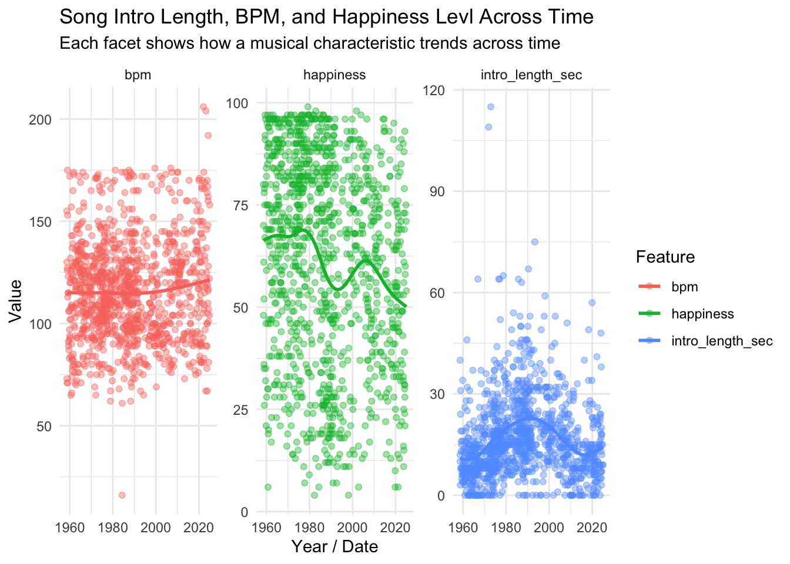
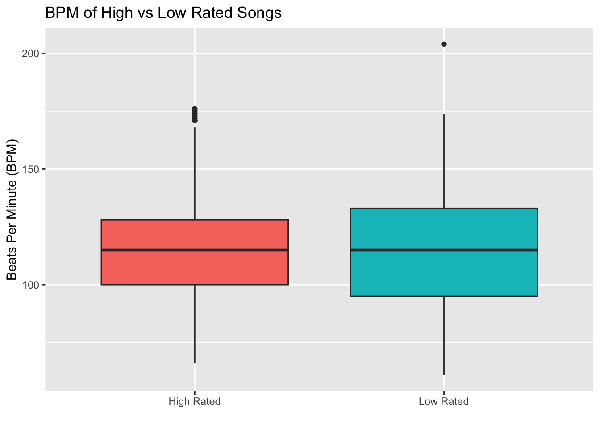
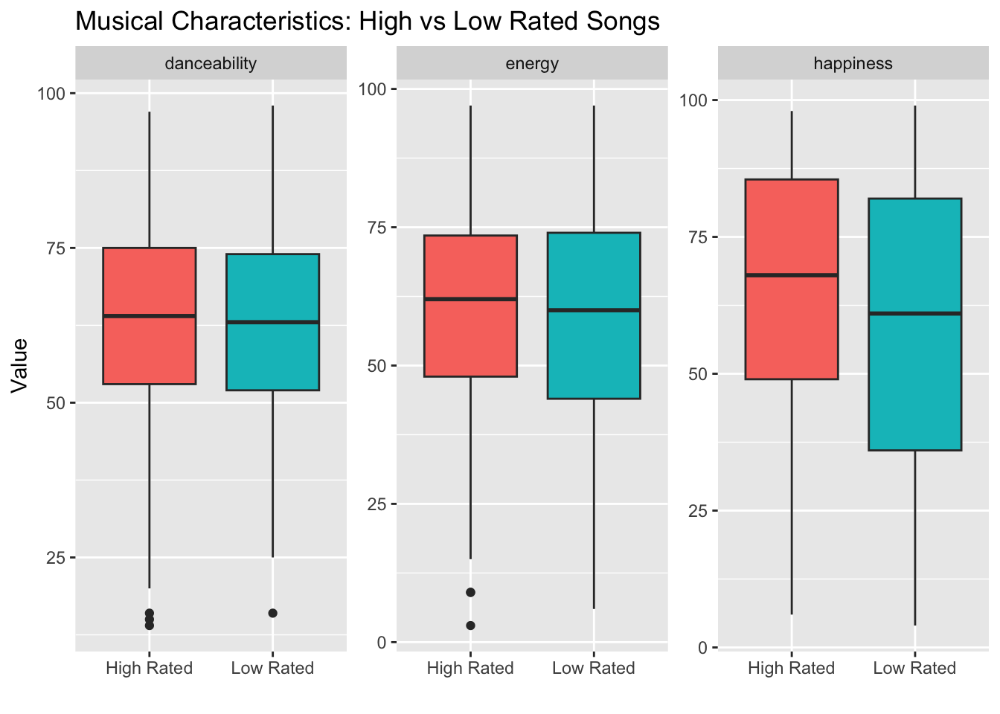

Musical Characteristics of Songs We Liked on the Billboard Hot 100
This page will analyze billboard data about every song to ever top the Billboard Hot 100 between August 4, 1958 and January 11, 2025.
NoteNotes on dataset
The original dataset contains 105 variables. We’ll only keep 10 variables of interests for this analysis using the reduced billboard dataset.
# Using R# Option 1: tidytuesdayR R package ## install.packages("tidytuesdayR")tuesdata <- tidytuesdayR::tt_load('2025-08-26')
---- Compiling #TidyTuesday Information for 2025-08-26 ----
--- There are 2 files available ---
── Downloading files ───────────────────────────────────────────────────────────
1 of 2: "billboard.csv"
2 of 2: "topics.csv"
---- Compiling #TidyTuesday Information for 2025-08-26 ----
--- There are 2 files available ---
── Downloading files ───────────────────────────────────────────────────────────
1 of 2: "billboard.csv"
2 of 2: "topics.csv"
billboard <- tuesdata$billboardtopics <- tuesdata$topics# Option 2: Read directly from GitHubbillboard <- readr::read_csv('https://raw.githubusercontent.com/rfordatascience/tidytuesday/main/data/2025/2025-08-26/billboard.csv')
Rows: 1177 Columns: 105
── Column specification ────────────────────────────────────────────────────────
Delimiter: ","
chr (26): song, artist, label, parent_label, cdr_genre, cdr_style, discogs_...
dbl (78): weeks_at_number_one, non_consecutive, rating_1, rating_2, rating_...
dttm (1): date
ℹ Use `spec()` to retrieve the full column specification for this data.
ℹ Specify the column types or set `show_col_types = FALSE` to quiet this message.
library(dplyr)
Attaching package: 'dplyr'
The following objects are masked from 'package:stats':
filter, lag
The following objects are masked from 'package:base':
intersect, setdiff, setequal, union
# keep exactly these variablesbillboard_reduced <- billboard %>%select( artist, song, date, foreign_language, intro_length_sec, happiness, danceability, energy, bpm, overall_rating )
Questions
This analysis investigates the features of highly rated rate songs on billboard hot 100 and patterns of change over years. How do top-rated vs lower-rated songs compare on BPM and mood (energy, happiness, and danceability)? Is there a relationship between intro length and overall rating? How do these features change over the year?
Intended Audience
This analysis synthesizes the key features and musical qualities that are common among higher-rated songs. The results may be useful for songwriters, producers, and music labels aiming to create hit songs, and they also provide insights into broader trends in the music industry for interested listeners.
library(dplyr)library(knitr)library(tibble)# Create a data dictionary manuallydata_dictionary <-tribble(~Variable, ~Type, ~Description,"artist", "character", "Name of the artist or band.","song", "character", "Title of the song.","date", "date", "Date when the song charted on Billboard Hot 100.","foreign_language", "numeric", "Indicator if the song is primarily non-English (1 = Yes, 0 = No).","intro_length_sec", "numeric", "Length of the song's intro in seconds before vocals or main beat.","happiness", "numeric", "Valence score (how positive/happy the song feels).","danceability", "numeric", "How suitable the track is for dancing (0–100 scale).","energy", "numeric", "Intensity and activity level of the song (0–100 scale).","bpm", "numeric", "Song tempo measured in Beats Per Minute.","overall_rating", "numeric", "Billboard rating score of the song.")kable(data_dictionary,caption ="📄 Data Dictionary for Billboard Song Dataset")
📄 Data Dictionary for Billboard Song Dataset
Variable
Type
Description
artist
character
Name of the artist or band.
song
character
Title of the song.
date
date
Date when the song charted on Billboard Hot 100.
foreign_language
numeric
Indicator if the song is primarily non-English (1 = Yes, 0 = No).
intro_length_sec
numeric
Length of the song’s intro in seconds before vocals or main beat.
happiness
numeric
Valence score (how positive/happy the song feels).
danceability
numeric
How suitable the track is for dancing (0–100 scale).
energy
numeric
Intensity and activity level of the song (0–100 scale).
Plot 2: BPM, Intro Length, Happiness level trends across time
library(dplyr)library(ggplot2)library(tidyr)
Attaching package: 'tidyr'
The following object is masked _by_ '.GlobalEnv':
billboard
library(lubridate)
Attaching package: 'lubridate'
The following objects are masked from 'package:base':
date, intersect, setdiff, union
billboard_reduced <- billboard_reduced %>%mutate(date =as.Date(date))# Select + reshape data into long formattrend_data <- billboard_reduced %>%select(date, intro_length_sec, bpm, happiness) %>%pivot_longer(cols =c(intro_length_sec, bpm, happiness),names_to ="feature",values_to ="value" )# Plottrend_data %>%ggplot(aes(x = date, y = value, color = feature)) +geom_point(alpha =0.4) +geom_smooth(se =FALSE) +facet_wrap(~ feature, scales ="free_y") +labs(title ="Song Intro Length, BPM, and Happiness Levl Across Time",subtitle ="Each facet shows how a musical characteristic trends across time",x ="Year / Date",y ="Value",color ="Feature" ) +theme_minimal()
`geom_smooth()` using method = 'gam' and formula = 'y ~ s(x, bs = "cs")'
Warning: Removed 4 rows containing non-finite outside the scale range
(`stat_smooth()`).
Warning: Removed 4 rows containing missing values or values outside the scale range
(`geom_point()`).

Plot 3: BPM and Mood by High rated songs and low rated songs
library(dplyr)billboard_grouped <- billboard_reduced %>%filter(!is.na(overall_rating)) %>%mutate(rating_category =case_when( overall_rating >=quantile(overall_rating, 0.75, na.rm =TRUE) ~"High Rated", overall_rating <=quantile(overall_rating, 0.25, na.rm =TRUE) ~"Low Rated" ) ) %>%# keep only high/lowfilter(!is.na(rating_category))#BPMbillboard_grouped %>%ggplot(aes(x = rating_category, y = bpm, fill = rating_category)) +geom_boxplot() +labs(title ="BPM of High vs Low Rated Songs",x ="",y ="Beats Per Minute (BPM)" ) +theme(legend.position ="none")
Warning: Removed 1 row containing non-finite outside the scale range
(`stat_boxplot()`).

#Moodlibrary(tidyr)library(ggplot2)billboard_grouped %>%select(rating_category, happiness, danceability, energy) %>%pivot_longer(cols =-rating_category, names_to ="feature", values_to ="value") %>%ggplot(aes(x = rating_category, y = value, fill = rating_category)) +geom_boxplot() +facet_wrap(~ feature, scales ="free") +labs(title ="Musical Characteristics: High vs Low Rated Songs",x ="",y ="Value" ) +theme(legend.position ="none")
Warning: Removed 3 rows containing non-finite outside the scale range
(`stat_boxplot()`).

Table Summary of Features: High vs Low Rated Songs
rating_category
avg_bpm
avg_energy
avg_happiness
avg_danceability
n
High Rated
116
60.9
65.2
63.3
331
Low Rated
116
58.9
58.8
62.0
358
Summary
NoteMain Takeaway
Pop music today is faster to start, less happy, but more energetic and danceable.
The boxplot comparing song ratings by intro length shows no strong evidence that longer intros lead to higher song ratings.
The median rating is similar across all three categories High-rated songs tend to have noticeably higher BPM, danceability, and energy than low-rated songs. These results suggest that upbeat, fast-tempo, energetic songs are more likely to be rated highly, indicating that slower and more mellow tracks are less favored by listeners.
In the 1980-2000s, songs often had long instrumental intros. Over time, intros have shrunk dramatically. This reflects modern streaming-era behavior: listeners skip quickly, so songs get to the point faster. This observation is supported by prior research: a study from Ohio State University found that instrumental intros on top-10 songs have shrunk from more than 20 seconds in the 1980s to around 5 seconds today Léveillé Gauvin (2017). Tempo (BPM) remains fairly steady. Happiness level declines noticeably. Songs in the 1980s–2000s show higher “happiness” scores. Songs become more rhythm-driven and beat-focused.